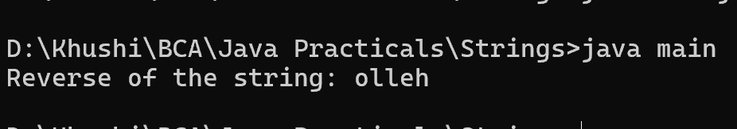

23. Program to find Reverse of the string
class main {
public static void main(String[] args) {
String str = "hello";
String reverse = new StringBuilder(str).reverse().toString();
System.out.println("Reverse of the string: " + reverse);
}
}
